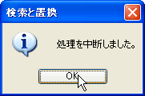

クイック検索の起動はデータグリッドウィンドウでShift+Ctrl+Fまたはコンテキストメニュー(右クリック)からクイック検索で表示します。
クイック検索のテキストボックスに文字を入力すれば選択されている列を下方向に逐次検索を行います。
また、現在のセルから上や下への検索、大文字小文字を区別しての検索なども可能です。
すばやい検索が可能なのであらかじめどの列に目的のデータがあるか分かっている場合などに有効な検索方法です。[ver1.0.1.0追加]
検索をするためにはメインメニューの機能→検索と置換かキーボードのCtrlキー+Fキー｣で ｢検索と置換ダイアログ｣を表示させます。
そして、検索文字列に検索したい文字列を入力後、検索テーブルを指定して｢次を検索｣ボタンをクリックします。
検索を途中で中止するにはキーボードの｢Break/Pouse｣キーを押してください。
高度な検索を行うには をクリックします。
検索オプションを設定すれば「正規表現で検索」や「全角と半角を区別して検索」などが行えます。
「正規表現で検索」にチェックを入れると「検索する文字列」の横の
「正規表現入力補助」ボタンが有効になります。
をクリックすると正規表現の入力補助メニューが表示されますのでクリックして「検索文字列」に挿入することが可能です。
置換をするためにはメインメニューの機能→検索と置換かキーボードのCtrlキー+Fキー｣で ｢検索と置換ダイアログ｣を表示させます。
そして、検索文字列に検索したい文字列を入力後、「置換後の文字列」を指定し検索テーブルを指定して｢置換｣ボタンをクリックします。
すると検索が開始され、ヒットすれば置換が行われます。「すべて置換」では検索文字列が見つかり続ける間置換を繰り返します。
置換を途中で中止するにはキーボードの｢Break/Pouse｣キーを押してください。
高度な置換を行うには をクリックします。
検索オプションを設定すれば「正規表現で置換」などが行えます。
「正規表現で検索」にチェックを入れると「検索する文字列」と「置換後の文字列」の横の
「正規表現入力補助」ボタンが有効になります。
をクリックすると正規表現の入力補助メニューが表示されますのでクリックして「検索文字列」や「置換後の文字列」に挿入することが可能です。
Copyright(C) 2008-2013 Pup All Rights Reserved.